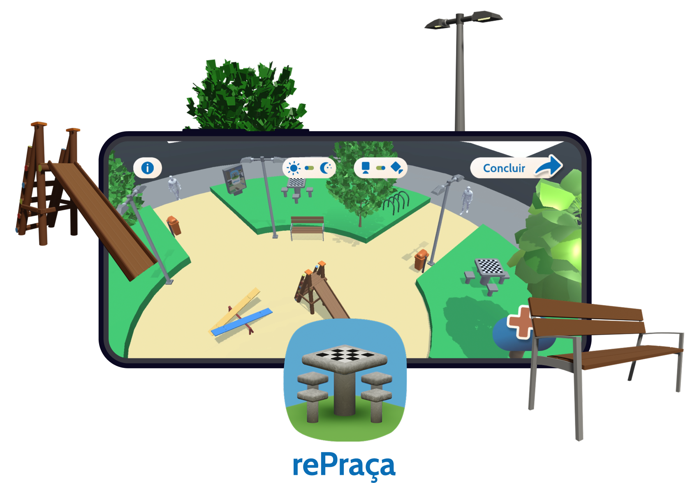
Public plazas exist all arounds us; hundreds of citizens interact with them every day.
What if we, the citizens, were the planners of our plazas? Would these spaces keep their current shape? How do one's wishes for this square differ from the one that currently exists, and how differently does each visitor imagine these places?
rePraça ("rePlaza") is a virtual creator of city squares. This project explores how visitors imagine these places differently than they currently exist. It empowers citizens to redesign public spaces, creating a platform to build, share, and exchange their visions for the city.

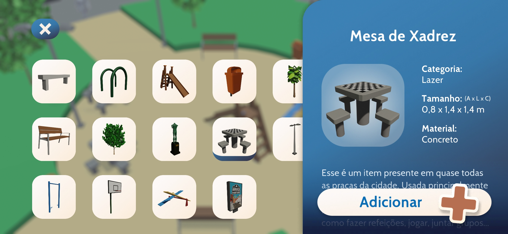
Project information:
Individual work | Mobile app developed with Unity
Key Features: Custom furniture catalog, user-generated layouts, position editing
rePraça website
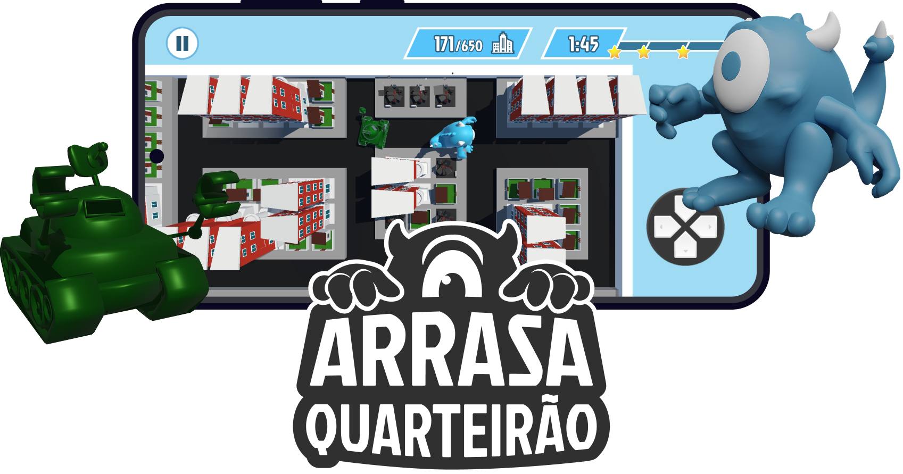
Arrasa Quarteirão ("Blockbuster") is an arcade game designed for mobile. The challenge was to capture the chaotic fun of classic arcade loops in a modern experience.
Players take on the role of MAQ-11, a friendly blue monster escaping capture by scientists. The goal is simple: demolish as many buildings as possible as fast as you can.
This project began in a Game Design course and evolved through iterations in Sound Design and UI classes. As an evolving group project, this game was an exercise in teamwork, project management, and in translating a simple concept into a fun, polished product.
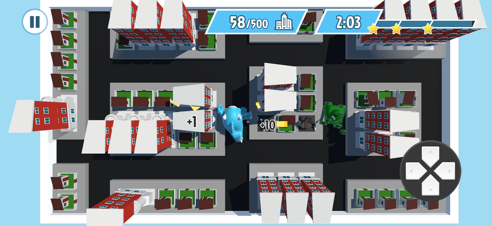
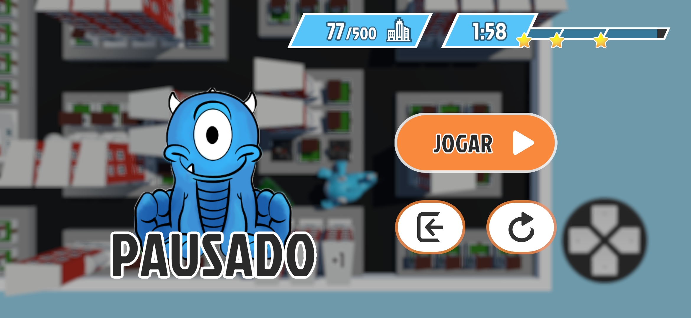
Project information:
Group work | Mobile game developed with Unity
My roles: Game design, User Interface, UX, coding, animation, sound design
Arrasa Quarteirão website
other projects
Revolta da Vacina
Gamifying History
Can a board game be both historically accurate and genuinely fun? This project balances strategic gameplay with educational depth, challenging players to navigate the political chaos of the 1904 Vaccine Revolt.
Revolta da Vacina is a strategic board game that transforms a complex historical event into an engaging educational experience. The project explores how gameplay mechanics can teach players about the 1904 Vaccine Revolt in Rio de Janeiro.
Concept:
Set during the pivotal Pereira Passos Reforms, the game immerses players in a crucial moment of the city's history. The board features an authentic 1904 map of Rio, allowing players to explore the urban planning debates from the period, historical landmarks, and social uprisings through a playful lens.
Gameplay:
Two factions face off: the Peacemakers and the Rebellious. Each side competes to vaccinate the population and sway public opinion. The outcome of this struggle determines how vaccines are perceived and shapes the city's future.
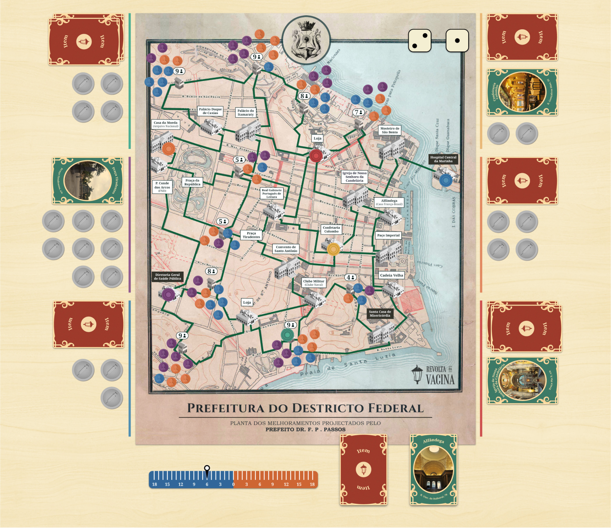
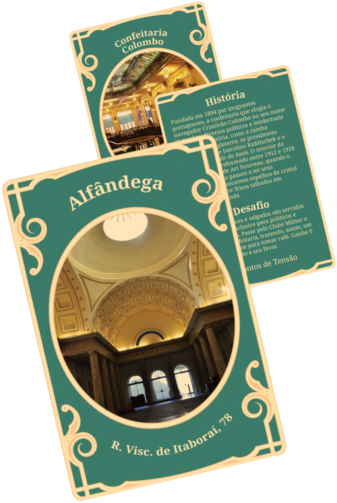
Design & Skills:
- Process: Involved in-depth historical research, iterative prototyping, and creating all visual assets (board, cards, and packaging).
- Context: Developed over one semester for the Advanced Project course.
- My Roles: Visual Design, Game Design, Illustration, Animation.
Open the project
Metrô Rio
A Frictionless Commute
Navigating public transport shouldn't be a puzzle. This UI/UX redesign prioritizes clarity and speed, stripping away clutter to help commuters and tourists reach their destination with zero stress.
Metrô Rio is a conceptual redesign of the city's subway app, focusing on a cleaner interface and intuitive navigation to improve the passenger experience.
Goal:
Designed for both daily commuters and tourists, the new interface prioritizes key actions: planning a trip, checking line status, and viewing the map. The redesign introduces a modern visual language to make the daily commute simpler and faster.
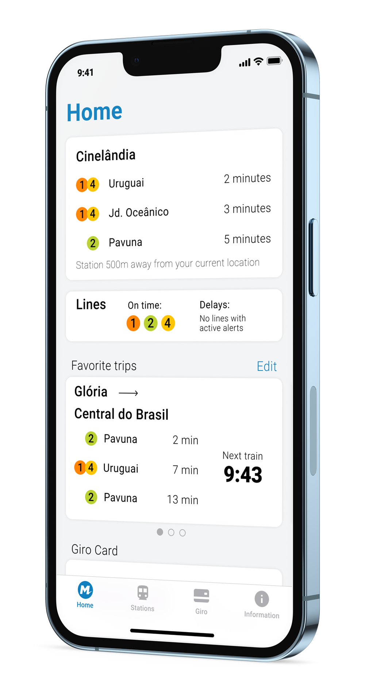
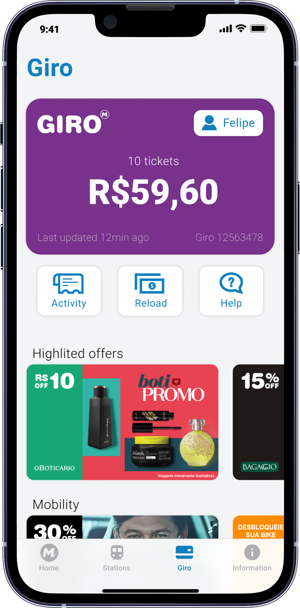
Project information:
- Type: Individual work | App Prototype
- Skills: User Journey Mapping, Information Architecture, UI/UX Design, Competitor Analysis.
- Outcome: A high-fidelity interactive prototype created in Figma.
Open the project
Páprica
Simplified Cooking Guide
A meal-kit delivery service designed for those who want to cook but lack the time to plan and shop. This service design project delivers fresh, pre-portioned ingredients and simple recipes right to your door, making home-cooked meals easy even for those learning how to cook.
Páprica is a meal-kit delivery service designed for people who want to cook but lack the time to plan and shop. The service delivers fresh, pre-portioned ingredients and simple recipes right to your door.
Concept:
Páprica is a project aimed at young Brazilians who have become less interested in cooking due to the abundance of ready-to-eat food options on the market. This project promotes a sustainable, healthy diet. By offering tasty, easy-to-cook combinations, we make home-cooked meals accessible, economical, and convenient.
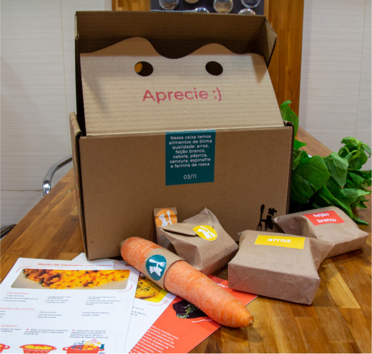
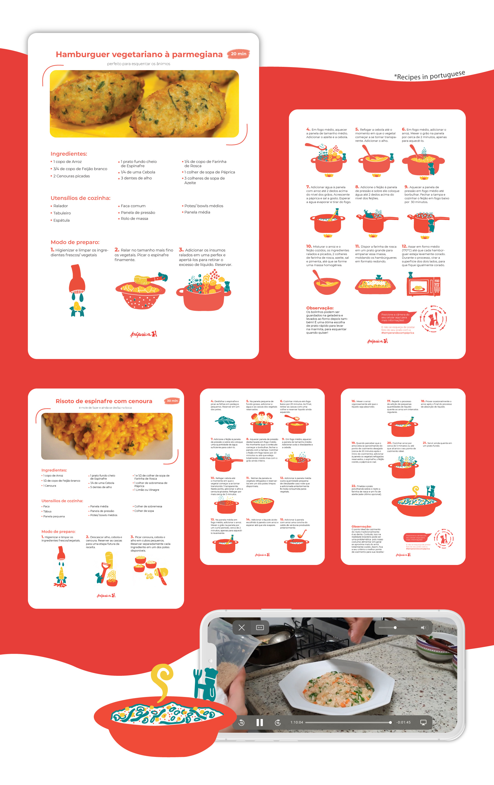
Design & Skills:
- Research: Conducted over 25 user interviews with diverse participants (from bus drivers to nutritionists) to validate the strategy.
- Process: Design of the Brand Identity, Packaging Design, Service Design, and the UI/UX for the concept website.
- My Roles: User Research, Design System, Prototyping, Testing, Animation.